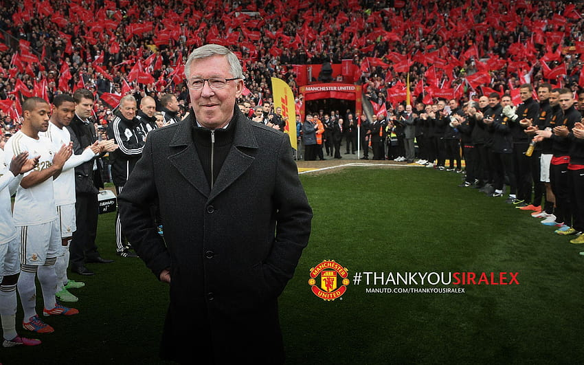
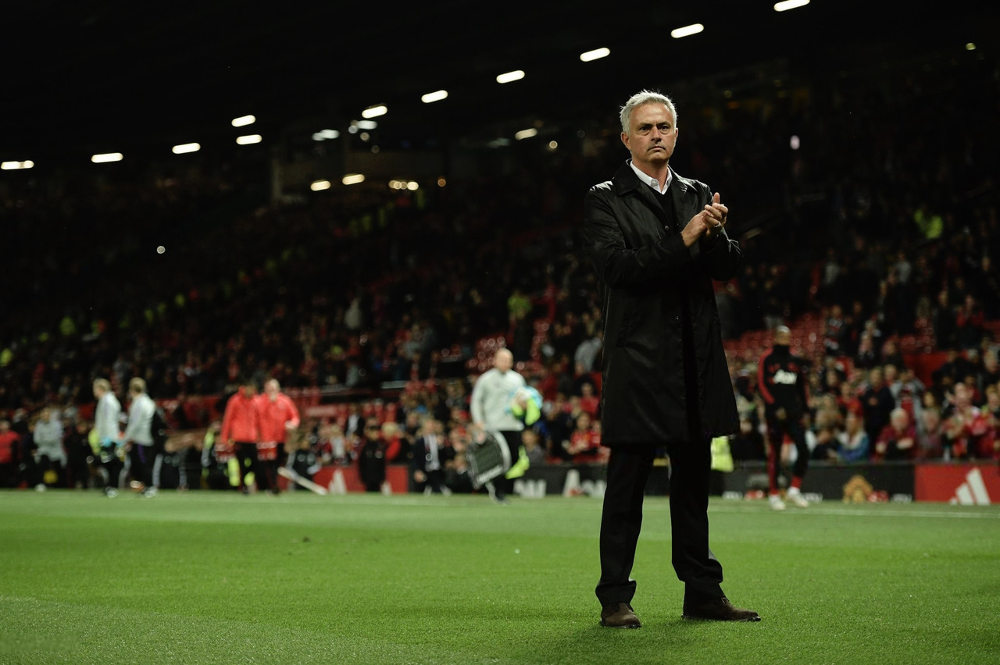
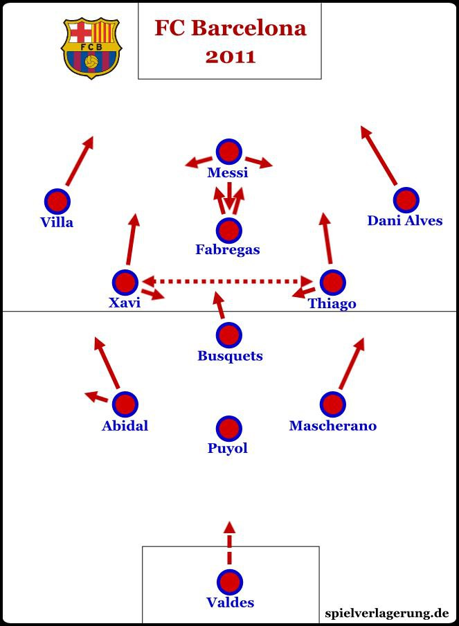
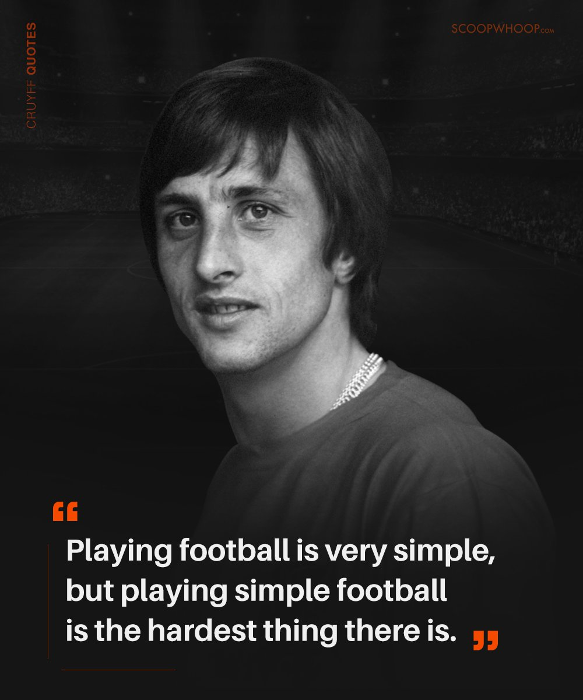
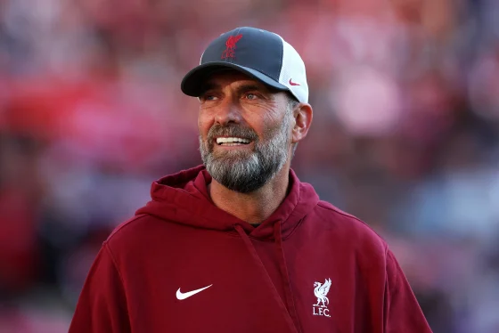

Sir Alex Ferguson’s Manchester United Legacy
Sir Alex Ferguson managed Manchester United for an incredible 26 years (1986-2013), transforming the club into one of the most dominant forces in football. His reign was marked by a blend of tactical brilliance, motivational leadership, and the ability to rebuild teams over multiple generations.

Key Achievements
- 13 Premier League titles (including the historic treble-winning 1998-99 season)
- 2 UEFA Champions League trophies (1999, 2008)
- 5 FA Cups, 4 League Cups, and a FIFA Club World Cup
Tactical Approach
Ferguson’s tactical philosophy evolved over the years to adapt to new challenges. He was known for:
- 4-4-2 Formation: Early success with a balanced attack and solid midfield, with wingers like Ryan Giggs and David Beckham creating opportunities.
- Fluid Attack: Later years saw the introduction of players like Cristiano Ronaldo and Wayne Rooney, who thrived in flexible, attacking systems.
- High-Intensity Pressing: Teams under Ferguson were known for pressing high up the pitch and exploiting counter-attacks.

Leadership and Motivation
Ferguson’s success was not just about tactics. His leadership skills were legendary:
- Man-Management: He handled egos, brought the best out of young talents, and managed a squad with a mix of experience and youth.
- Rebuilding Teams: Ferguson rebuilt Manchester United multiple times, ensuring sustained success. Key rebuilds included the 1992 “Class of '92” (with players like Giggs, Scholes, and Neville) and the 2006-2008 era (with Ronaldo, Rooney, and Tevez).
- ‘Hairdryer Treatment’: His fiery half-time speeches motivated players to perform better, holding everyone accountable regardless of their status.
Legacy
When Sir Alex retired in 2013, he left behind a dynasty. His leadership, vision, and success continue to inspire managers worldwide. Manchester United has struggled to replicate his dominance since his departure, showing just how pivotal Ferguson was to the club’s success.
José Mourinho: The Special One
Known as "The Special One," José Mourinho is one of the most successful and influential managers in modern football. His career is marked by tactical brilliance, charisma, and a relentless winning mentality. Over the years, Mourinho has managed elite clubs such as Porto, Chelsea, Inter Milan, Real Madrid, Manchester United, and Roma.

Key Achievements
- UEFA Champions League titles (2004 with Porto, 2010 with Inter Milan)
- 3 Premier League titles with Chelsea (2005, 2006, 2015)
- La Liga title with Real Madrid (2012) and multiple domestic cup wins
- Europa Conference League with AS Roma (2022)
Tactical Philosophy
Mourinho is renowned for his pragmatic approach and tactical discipline. His methods often focus on:
- Defensive Solidity: Famous for implementing a low block and compact defensive shape to frustrate opponents.
- Counter-Attacking Football: Quick transitions from defense to attack using pacey wingers and midfield runners.
- Man-Marking System: In crucial matches, Mourinho's teams apply strict man-marking to neutralize key opponents.

Leadership and Mind Games
Mourinho's leadership style is both inspiring and controversial. He is known for:
- Psychological Warfare: Mourinho often engages in mind games to put pressure on opponents and distract the media.
- Building Loyalty: His players often develop a strong bond with him, willing to go to great lengths to win under his guidance.
- Handling the Media: His press conferences are legendary, often stealing headlines and diverting attention from team struggles.
Legacy
Despite controversies, Mourinho’s legacy as a serial winner is undisputed. His impact on football, particularly his success at underdog clubs like Porto and Inter Milan, continues to influence managers worldwide.
Pep Guardiola: The Mastermind of modren Football
Pep Guardiola is regarded as one of the greatest football managers in history,
revolutionizing the game with his possession-based philosophy. From his success with Barcelona to his dominance at Bayern Munich and Manchester City, Guardiola’s teams are known for playing beautiful, winning football.

Key Achievements
- 3 UEFA Champions League titles (2 with Barcelona, 1 with Manchester City)
- Over 10 domestic league titles across La Liga, Bundesliga, and Premier League
- 3 Club World Cups, multiple domestic cups, and a continental treble with Barcelona (2008-09)
- Premier League records with Manchester City (100 points in 2017-18 season)
Tactical Philosophy
Guardiola's tactical innovations have had a lasting impact on modern football:
- Tiki-Taka Football: Emphasizes short, quick passes and maintaining possession to control the game.
- Positional Play (Juego de Posición): Players are positioned to maintain structure and outnumber opponents in key areas.
- Inverted Fullbacks: His teams often use fullbacks who drift into midfield to overload central areas.

Leadership and Adaptability
Pep’s success lies not only in his tactical knowledge but also in his leadership skills and adaptability:
- Player Development: Guardiola has nurtured talents like Lionel Messi, Kevin De Bruyne, and Phil Foden.
- Adaptability: His teams evolve every season, constantly introducing new tactical elements to stay ahead.
- Attention to Detail: Guardiola is known for his meticulous preparation, analyzing every aspect of the game.
Legacy
Guardiola’s influence extends beyond his trophies. His approach has inspired managers worldwide, and his commitment to playing attractive football has left a lasting mark on the game.

- on 2008-2009
- Continental Treple Twice
- The first spanish club to win the continental Treple
- La Liga
- The Copa Del Rey
- The UEFA Champions league
Johan Cruyff: The Architect of Total Football
Johan Cruyff is regarded as one of the most influential figures in football history. Both as a player and a manager, he revolutionized the game through his philosophy of Total Football. His impact extended beyond the pitch, shaping the way modern football is played, especially at Ajax, Barcelona, and the Dutch national team.

Key Achievements
- 3 Ballon d'Or awards (1971, 1973, 1974)
- 3 European Cup titles with Ajax (1971, 1972, 1973)
- La Liga winner as a player and manager with Barcelona
- Founder of the "La Masia" academy system at Barcelona
Tactical Philosophy: Total Football
Cruyff’s philosophy, known as Total Football, emphasizes fluidity, possession, and space management. Key elements of his tactics include:
- Interchangeable Roles: Players can switch positions during play to maintain structure and dominance.
- Ball Possession: Controlling the game by keeping possession and dictating the tempo.
- High Pressing: Defending starts from the front, with attackers pressing to recover the ball quickly.

Leadership and Legacy
Cruyff’s leadership extended beyond tactics. He reshaped the culture of the clubs he was part of, especially Barcelona, with his focus on youth development and attacking football. The principles he laid down at La Masia continue to influence the football world.
"Playing football is very simple, but playing simple football is the hardest thing there is." – Johan Cruyff
"Every disadvantage has its advantage." – Johan Cruyff
"Quality without results is pointless. Results without quality is boring." – Johan Cruyff
Legacy
Cruyff’s influence goes beyond trophies. His philosophy and ideals live on through managers like Pep Guardiola and others who have adopted his ideas. The Johan Cruyff Arena in Amsterdam, named in his honor, is a testament to his lasting legacy.
Carlo Ancelotti: The Calm Maestro
Carlo Ancelotti is one of the most decorated managers in football history, known for his calm demeanor and tactical versatility. He has enjoyed success in major European leagues, winning domestic titles and multiple Champions League trophies with elite clubs like AC Milan, Real Madrid, Chelsea, Bayern Munich, and Paris Saint-Germain.

Key Achievements
- 4 UEFA Champions League titles (twice with AC Milan, twice with Real Madrid)
- League titles in Italy, England, France, Germany, and Spain (5 top leagues)
- First manager to win the Champions League four times as a coach
- Multiple domestic cup victories, including the FA Cup and Coppa Italia
Tactical Philosophy
Ancelotti is known for his tactical flexibility and ability to adapt to his players’ strengths. His key tactical principles include:
- 4-3-3 and 4-4-2 Systems: He frequently switches between these formations based on the opponent and squad availability.
- Player-Centered Approach: Ancelotti gives his players freedom to express themselves on the pitch, building strong trust.
- Calm Leadership: Unlike more fiery managers, Ancelotti maintains composure in high-pressure situations, inspiring his teams.

Quotes by Carlo Ancelotti
"Tactics are important, but the mental strength is the difference between winning and losing." – Carlo Ancelotti
"Football is the most important of the less important things in life." – Carlo Ancelotti
Legacy
Carlo Ancelotti’s calm demeanor, combined with his tactical expertise, has made him a beloved figure among players and fans alike. His success across Europe’s top leagues cements his legacy as one of the greatest managers of all time.
Arsène Wenger: The Professor of Football
Arsène Wenger is celebrated as one of the most influential managers in modern football history. Known for his visionary tactics, longevity, and innovation at Arsenal FC, Wenger transformed the way English football was played. He introduced new training methods, dietary practices, and promoted a fast, attacking style of play.

Key Achievements
- 3 Premier League titles with Arsenal (including the 2003-04 Invincibles season)
- 7 FA Cup titles – the most by any manager
- Managed Arsenal for 22 years, from 1996 to 2018
- Led Arsenal to 49 unbeaten games, a Premier League record
Tactical Philosophy
Wenger was known for his forward-thinking tactics, promoting creative football with an emphasis on attack and movement. His key tactical principles included:
- Attacking Football: Wenger’s teams focused on fluid attacks with quick, short passes.
- Youth Development: He nurtured talents like Thierry Henry, Cesc Fàbregas, and Robin van Persie.
- Positional Play: Players were given the freedom to express themselves within structured positions.
Quotes by Arsène Wenger
"A football team is like a beautiful orchestra; it needs different instruments and sounds to make it work." – Arsène Wenger
"The only way to deal with pressure is to turn it into motivation." – Arsène Wenger
"If you do not believe you can do it, then you have no chance at all." – Arsène Wenger
Legacy
Wenger’s impact on football extends beyond trophies. His emphasis on youth development, innovation, and beautiful football influenced generations of managers and players. Arsenal’s move to the Emirates Stadium is a testament to his vision and dedication to building a sustainable future for the club.
Luis Enrique: The Passionate Innovator
Luis Enrique is known for his relentless passion, tactical versatility, and success with Barcelona and the Spanish national team. As both a player and a manager, Enrique achieved significant milestones, leading Barcelona to a historic treble and revitalizing Spain’s playing style with a blend of possession football and direct attacks.

Key Achievements
- Won the treble (La Liga, Copa del Rey, and UEFA Champions League) with Barcelona in 2014-15
- Guided Barcelona to back-to-back domestic doubles (2014-15, 2015-16)
- Led Spain to the UEFA Nations League final in 2021
- Played for both Real Madrid and Barcelona during his career
Tactical Philosophy
Luis Enrique’s style is a mix of possession-based football and high-intensity pressing. His teams emphasize quick transitions and positional discipline. Key elements of his philosophy include:
- High Pressing: Enrique’s teams press aggressively to regain possession quickly.
- Quick Transitions: Focus on moving the ball forward rapidly after winning possession.
- Fluid Formation: Frequently alternates between 4-3-3 and 3-4-3 systems.
Quotes by Luis Enrique
"You always have to fight to reach your dreams. Life is a constant challenge." – Luis Enrique
"The most important thing is the team. When the team is strong, individuals shine." – Luis Enrique
Legacy
Luis Enrique’s influence as a manager extends beyond silverware. His ability to inspire players and implement a flexible playing style has earned him admiration across the football world. His tenure at Barcelona, where he managed some of the greatest players, remains one of the most celebrated periods in the club's history.
Xabi Alonso: The Midfield Maestro Turned Manager
Xabi Alonso is celebrated as one of the most intelligent midfielders of his generation, known for his vision, passing range, and tactical awareness. Alonso excelled at clubs like Liverpool, Real Madrid, Bayern Munich, and the Spanish national team. Now, as a manager, Alonso continues to demonstrate his footballing intellect on the sidelines.

Key Achievements
- Champions League winner with Liverpool (2004-05) and Real Madrid (2013-14)
- World Cup champion (2010) and two-time European Championship winner with Spain (2008, 2012)
- League titles with Real Madrid and Bayern Munich
- Over 100 caps for Spain
Tactical Philosophy as a Manager
As a manager, Xabi Alonso draws from his experiences under top coaches like Pep Guardiola, Jose Mourinho, and Carlo Ancelotti. His tactical style is defined by:
- Control through Possession: Like his playing days, Alonso emphasizes controlling the tempo through possession.
- Pressing and Compact Defending: His teams are organized and press high to regain possession quickly.
- Developing Youth: Alonso focuses on nurturing young talents, evident from his work with Real Sociedad B and Bayer Leverkusen.
Quotes by Xabi Alonso
"Some players need time to think. Xabi Alonso has a map of the game in his head." – Pep Guardiola
"I love football, and I want to pass on my passion and knowledge to the next generation." – Xabi Alonso
Legacy
Xabi Alonso’s legacy extends beyond trophies. As a player, he was revered for his ability to dictate games with his passing and composure. As a manager, his influence is already being felt, with his tactical acumen shaping future stars and teams. His career stands as a testament to the power of intelligence and grace on the pitch.
Hansi Flick: The Silent Achiever
Hansi Flick rose to prominence as a manager with his incredible success at Bayern Munich, where he led the team to a historic treble in the 2019-20 season. Known for his quiet leadership and tactical precision, Flick revitalized Bayern and later took charge of the German national team, aiming to restore their glory.

Key Achievements
- Champions League winner with Bayern Munich (2019-20)
- Led Bayern to a historic sextuple (Bundesliga, DFB-Pokal, Champions League, UEFA Super Cup, FIFA Club World Cup, DFL-Supercup)
- Became Germany’s national team coach in 2021
- Assistant coach during Germany's 2014 World Cup triumph
Tactical Philosophy
Flick’s tactical approach emphasizes aggressive pressing, quick transitions, and fluid attacking play. His key principles include:
- High Pressing: Constant pressure to regain possession high up the pitch.
- Quick Transitions: Turnovers are immediately converted into attacks.
- Player Empowerment: Flick fosters a positive environment where players take ownership of their roles.
Legacy and Impact
Hansi Flick's managerial journey proves that success doesn’t require flashy tactics or bold statements. His quiet demeanor masks an exceptional football mind, reflected in Bayern’s dominance under his leadership. His ability to unite teams and bring out the best in players remains a defining trait of his coaching style.
"Football is a simple game, but to play simple football is the hardest thing." – Hansi Flick
Jürgen Klopp: The Master of Gegenpressing
Jürgen Klopp is known for revolutionizing modern football with his intense style of play, famously called “Gegenpressing”. Klopp has achieved incredible success at Borussia Dortmund and Liverpool FC, winning domestic titles and European trophies while inspiring fans and players with his charismatic leadership.

Key Achievements
- Champions League winner with Liverpool (2018-19)
- Premier League title with Liverpool (2019-20) after 30 years
- Two Bundesliga titles with Borussia Dortmund (2010-11, 2011-12)
- FIFA Club World Cup champion with Liverpool (2019)
Tactical Philosophy
Klopp’s signature playing style, Gegenpressing, revolves around high-energy football where the team immediately presses the opposition after losing possession. Key elements of Klopp’s philosophy include:
- High Pressing: Relentless pressure to disrupt opponents and regain possession.
- Fast Transitions: Quick counterattacks after regaining the ball.
- Emotional Leadership: Klopp builds strong emotional bonds with his players, motivating them to perform at their best.
Legacy and Impact
Jürgen Klopp's legacy extends beyond trophies. His passion, charisma, and belief in teamwork have transformed clubs and players alike. At Liverpool, he rebuilt a struggling team into European and Premier League champions, cementing his place among football’s elite managers.
"The best moment I can imagine is the moment after the game, when everyone celebrates together." – Jürgen Klopp